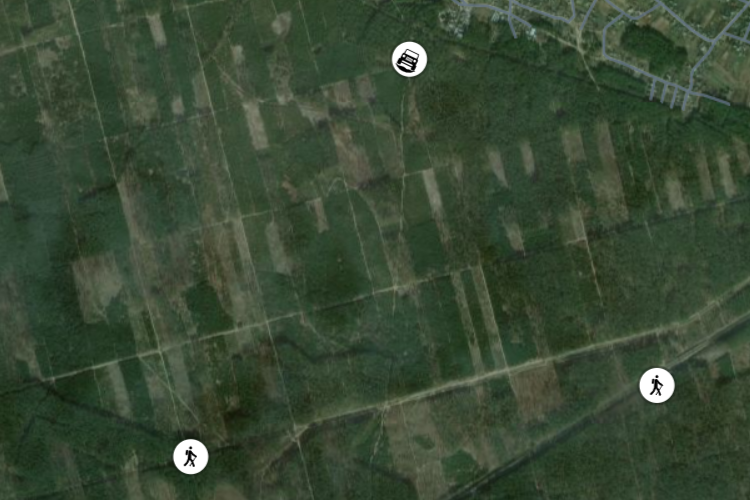

Лабораторна робота №1, Володимир Дудко, варіант №4
Велосипед
Велосипед — транспортний засіб, який приводить в рух сила людських м'язів, що передається на ведуче(і) колесо(а). Зазвичай велосипеди мають два колеса; бувають також триколісні велосипеди та інші, екзотичніші — одноколісні, чотириколісні тощо.
Нині у світі використовується понад мільярд велосипедів, таким чином велосипед — найрозповсюдженіший транспортний засіб. Він став таким завдяки низькій вартості (включно з вартістю експлуатації), невеликій вазі та розмірам, відсутності потреби в пальному та елементах безпеки. У розвинутих країнах сучасного світу велосипеди набувають популярності завдяки спортивному навантаженню та екологічній чистоті.
- C#
- Java
- JavaScript
- Kotlin
- Python
- Відкрийте Провідник Windows (натисніть Win + E).
- Перейдіть до папки, де знаходиться файл, який ви хочете видалити.
- Клацніть правою кнопкою миші по файлу.
- Виберіть Видалити (або натисніть клавішу Delete на клавіатурі).
- Файл буде переміщено в кошик.
- Механіка
- Розділ фізики, який вивчає рух тіл та взаємодії між ними.
- Електромагнітне поле
- Поле, яке виникає навколо електричних зарядів і змінюється в часі при змінному електричному або магнітному полі.
- Термодинаміка
- Розділ фізики, що вивчає закони тепла та енергії і їх перетворення в різні форми.
- Планування веб-сайту
- Визначення цілей сайту
- Яка мета веб-сайту?
- Яка цільова аудиторія?
- Створення карти сайту
- Основні розділи сайту
- Навігація між сторінками
- Розробка веб-сайту
- Розробка дизайну
- Вибір кольорової схеми
- Створення макетів сторінок
- Кодування сайту
- HTML
- CSS
- JavaScript
- Тестування та запуск сайту
- Перевірка на мобільних пристроях
- Адаптивний дизайн
- Тестування швидкості
- Перевірка функціональності
- Перевірка форм
- Перевірка інтерактивних елементів
Лабораторна робота №1
Перейти до невпорядкованого списку
| 4x4 стіл |
| Комірка 1 |
Комірка 2 |
Комірка 3 |
Комірка 4 |
| Комірка 5 |
Комірка 6 |
Комірка 7 |
Комірка 8 |
| Комірка 9 |
Комірка 10 |
Комірка 11 |
Комірка 12 |
| Комірка 3 |
Комірка 14 |
Комірка 15 |
Комірка 16 |
